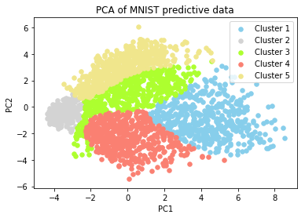

SVM on MNIST
SVM
SVM is a supervised machine learning model used for classification and regression.
Here, we gonna use it as a classifier on MNIST, a handwritten data set.
Our goal is to build a set of hyperplanes with the largest margin that seperates the classes.
H1 does not separate the classes. H2 does, but only with a small margin. H3 separates them with the maximum margin.
from wiki - Support vector machine
LIBSVM
Introduction
LIBSVM is a libray for Support Vector Machines constructed by professor Chih-Jen Lin.
From its website says
"LIBSVM is an integrated software for support vector classification (C-SVC, nu-SVC), regression (epsilon-SVR, nu-SVR) and distribution estimation (one-class SVM). It supports multi-class classification."
According to this, We can tell LIBSVM is a powerful tool.
And here we'll use C-SVC to build our model for handwritten classification.
How to Use
LIBSVM also provides a great number of programming language interfaces, including Python, R, Matlab, Perl, Ruby, etc.
Therefore, we gonna use it in python.
First, we have to change our raw data into libsvm input format.
Format of input data
2
3
4
5
label2 index1:value1...
.
.
.
Second, scale data value into the same scale range.
Third, select the proper kernel fit our data set.
And then find the best parameter for our model.
Finally, we test our model with test data set.
Recommended steps from "Tutorial" for beginner:
- Transform data to the format of an SVM package.
- Conduct simple scaling on the data.
- Consider the RBF kernel $K(x, y) = e^{-\gamma||x - y||^2}$
- Use cross-validation to find the best parameter C and $\gamma$
- Use the best parameter C and $\gamma$ to train the whole training set
- Test
How to Use in python
Check their github to download the source code.
After that, go to libsvm and python folder making file.
1 | STWMacBook: ~/libsvm% make |
We can just import libsvm and call the functions of libsvm in our python code.
1 | from svmutil import * |
Caution: We have to move "svm.py", "svmutil.py", "libsvm.so.2" and "svm-train" into the folder where our python code is.
PCA
Every data of MINST is a image with 28X28 pixels, that is, a 784-dimensional data point.
Therefore, we have to reduce its dimention, here we use PCA as our dimensionality reduction approach.
We are not ganna explain why PCA work, we just have to know that we pick few dimensions that can represent our data well and the rest of them are not that important.
Using PCA from sklearn help us visualizing our data set.
And then plot them out.
1 | # Applying PCA |
SVM in Python with LIBSVM
Data Preprocessing
First step, load data, change format of it and output as text file.
1 | import numpy as np |
main
Train our model with libsvm.
Since, our raw data has already scaled, we just need to start training.
The default kernel is RBF.
-t kernel_type : set type of kernel function (default 2)
0 -- linear: u'v
1 -- polynomial: (gammau'v + coef0)^degree
2 -- radial basis function: exp(-gamma|u-v|^2)
3 -- sigmoid: tanh(gammau'v + coef0)
1 | svm_train(y, x, "-t 2 -c 8 -g 0.03125") |
1 | from svmutil import * |
with Different Kernel
Try different kernel and see what is gonna happen.
1 | model = svm_train(y, x, "-t 1 -r 5 -d 3 -c 8 -g 0.03125") |
1 | model = svm_train(y, x, "-t 3 -r 5 -c 8 -g 0.03125") |
Result
We plotted the result of RBF kernel svm model with 784-dimentional data points by PCA into 2 significant dimensions, just for visualization.
The result with accuracy of 98.52% (2463/2500)
We found that the result of prediction was really close to groundtruth, almost the same.
However, we have an alternative option that we can do PCA first and use selected dimensions to do model training.
Check here for code
The result with accuracy of 74.48% (1862/2500)

The result did not look well, but was good for visualization, when we did PCA first.
Therefore, we used this on showing support vector and decision boundary.
Showing Support Vector
After model was trained, we could get support vectors from the svm_model structure of LIBSVM.
1 | struct svm_model |
1 | def get_support_vector(model, training_set): |
Note that we plotted only 10 support vectors of each class, because there were too many support vectors which cannot be visualized well.
graph with support vectors ($\star$ stars)
Showing Decision Boundary
We used SVC from sklearn.svm to train our model for simplicity, due to the approach for plotting decision boundary.
1 | from sklearn.svm import SVC |
How did we plot those prediction regions or boundaries?
We took all the pixels of the frame, resolved them into 0.01 and applied our classifier on it.
That is, for each new point(pixel of 0.01 resolution), our model would classify them,
and colorize them in the color that they belong.
After doing this on all the pixel points in the frame,
we could see that those pixel points formed the decision regions or boundaries.
decision boundary
Finding Optimum Parameter set
In our MNIST case, we use rbf kernel for our svm model, so we have to decide the value of two parameters C and $\gamma$.
But what value should we choose that would give us the best result?
There are several ways to find optimum parameter set, like grid search,
Bayesian optimization, random search, gradient-based optimization, etc.
Here we use grid search approach.
grid search approach
This approach is pretty straightforward.
Grid search is simply an exhaustive searching through a manually specified subset of the hyperparameter space of a learning algorithm. wiki-Hyperparameter_optimization
Why we choose the simplest way?
There are few reasons, says from Guide page 6 :
- We may not feel safe to use methods which avoid doing an exhaustive parameter search by approximations or heuristics.
- The computational time required to find good parameters by grid search is not much more than that by advanced methods since there are only two parameters.
- The grid search can be easily parallelized because each $(C, \gamma)$ is independent.
grid.py
LIBSVM provide a tool to help us finding the best parameters, using grid search approach, called grid.py.
1 | %run -i grid.py svm_format_train |
We found that the best parameter set is $(C, \gamma) = (2^3, 2^{-5})$
code of PCA first method
1 | #!/usr/bin/env python3 |